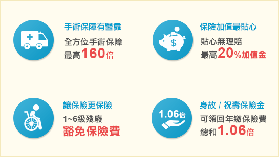

您知道雖然有全民健保的給付，但國人自費醫療的費用卻是逐年增加？
您知道雖然有全民健保的給付，但國人自費醫療的費用卻是逐年增加？
A : 健保實施滿20周年，雖然健保給付倍數增加，但民眾自費負擔不僅沒有減少，反而快速成長，2011年國人自費率已達35%。醫界推估2015民眾醫療自費比例將推昇至45%，等於民眾自費醫療近5000億元。
合庫人壽「健康醫靠」讓您的醫療更有依靠，想進一步了解，請留下資料了解更多。
您知道一般醫療險，多半只適合「自用」，如果醫療帳戶裡的錢沒有用完，所繳保費也拿不回來？
A : 合庫人壽「健康醫靠」的保費「有去有回」！有用到就照顧自己，沒用到還可以照顧家人，保險年齡16歲起，身故受益人可以拿到「年繳保險費總和1.06倍」，需扣除已申領的理賠金。
想進一步了解「健康醫靠」，請留下資料了解更多。
四大保障
保障內容
案例分享

備註及重要訊息揭露
以投保20年期健康醫靠保險日額2000元為例：(將滑鼠移至您想了解的內容)
手術醫療保險金
重大手術
慰問保險金
家庭看護保險金
出院後門診保險金
無理賠紀錄
增值保險金
1~6級殘廢
豁免保險費
保額x1~80倍
最高80,000元
(保額1,000元)
保額x30、80倍
最高80,000元
(保額1,000元)
保額x1倍
住院每日1,000元
(保額1,000元)
保額x0.5倍
每日500元
(保額1,000元)
無理賠記錄期間
3年(含)~6年：
理賠金+10%增額給付
6年(含)以上：
理賠金+
20%增額給付
因疾病或意外
致成1~6級殘廢
豁免未到期保費
備註及重要訊息揭露
【健康醫靠】保障醫療計畫免費索取資料
免費諮詢專線：0800-678-266